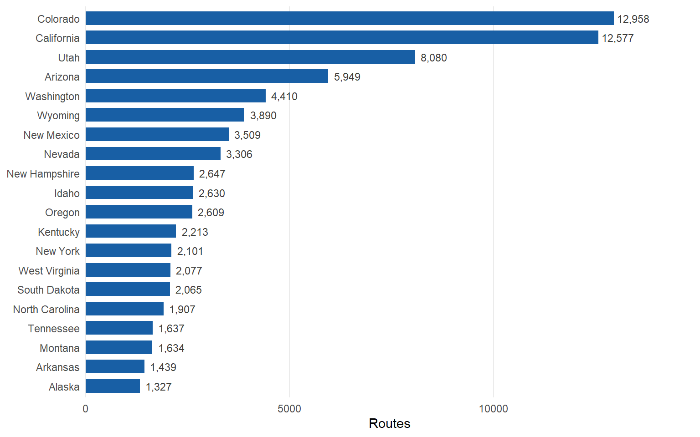
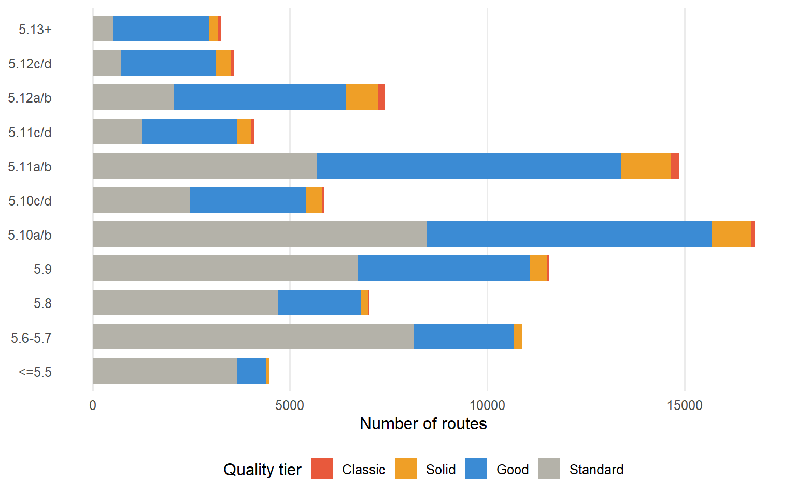
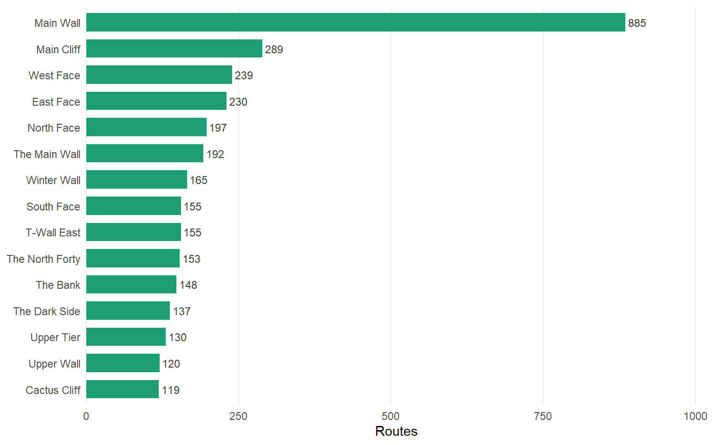
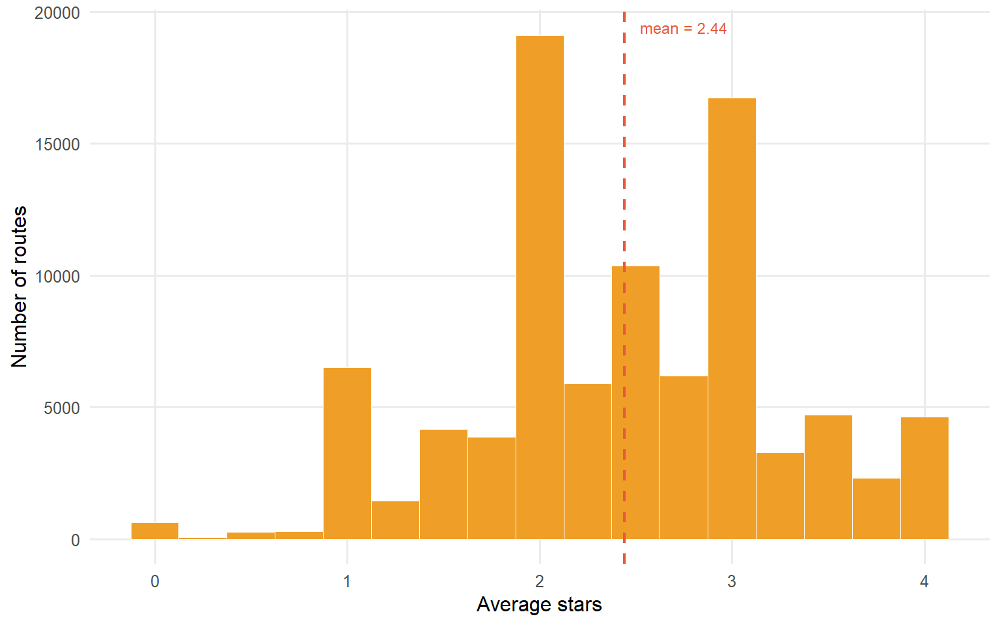

US Routes
90,408
Climbing Walls
13,446
States Covered
47
Classic Routes
876
Avg Star Rating
2.4
Climbing walls across the US
Routes by state (top 20)

Grade distribution by quality tier

Route type breakdown

Top 15 walls by route count

Star rating distribution

Top classic routes (3.8+ stars, 20+ votes)